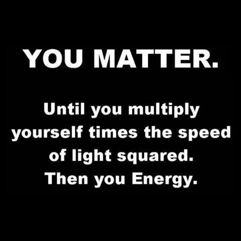

Psalm 111:2
Great are the works of the Lord, studied by all who delight in them.
Student Notebook hyperlinks for module 1:
p. 13 in the SNB: link.apologia.com/ECPS2N/1.1 History of measurement
p. 14 in the SNB: link.apologia.com/ECPS2N/1.2 Common conversions between units of measurement (The video seems to be down, it may not work when you try it)
Required Videos and Links:
Weight vs. Mass explanation: https://www.pixton.com/schools/gallery/kjzy095l
A helpful graphic for metric prefixes.
Why the metric system matters - a Ted Ed video by Matt Anticole
Optional but Helpful:
Math help
Fun with Dimensional AnalysisThis site teaches the factor-label method for dimensional analysis. There are several examples at the bottom that walk you through it.
Vocabulary Flashcards on Quizlet
Module 1 flash cards
